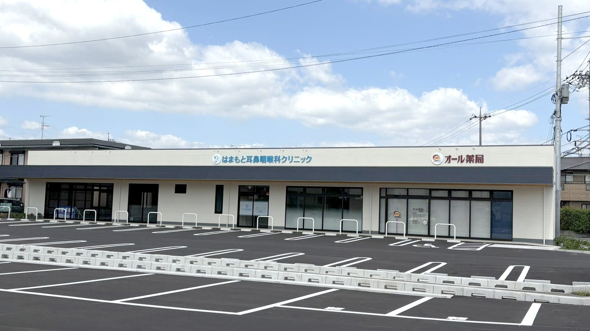
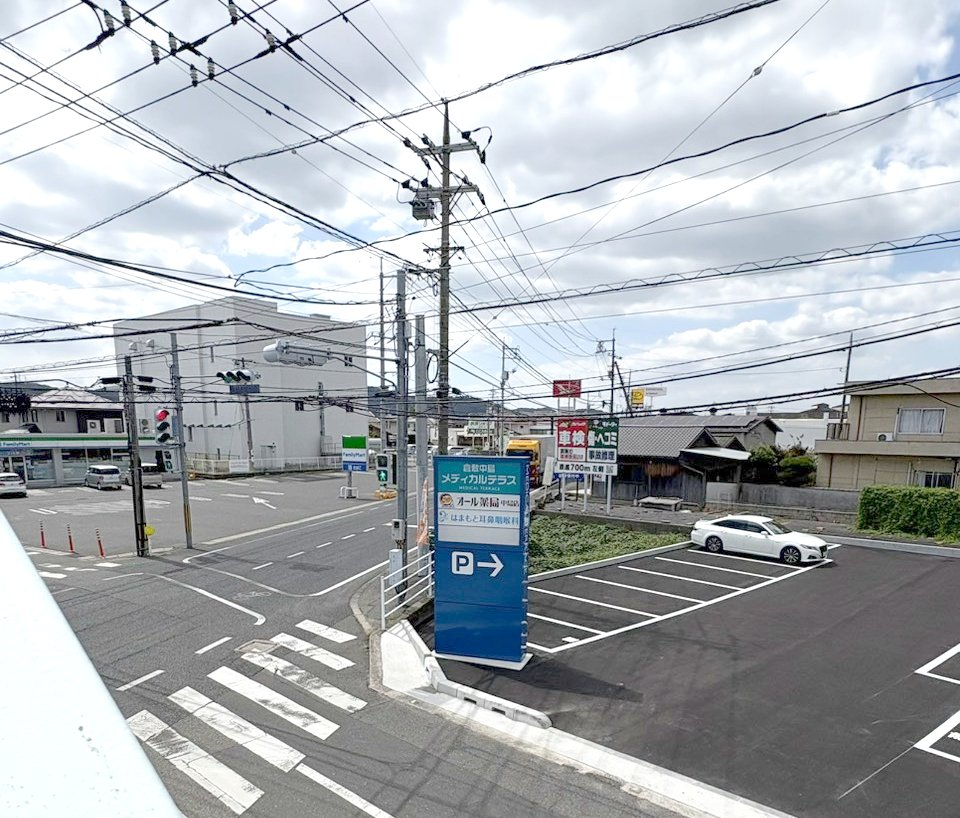

倉敷中島メディカルテラスは、調剤薬局と専門クリニックがあつまる医療モールです。
受診からお薬の受け取りまで、同じ敷地内でゆとりを持ってお過ごしいただけます。

倉敷中島メディカルテラスでは、ご開業いただく医療機関を1区画募集しています。
調剤薬局と耳鼻咽喉科クリニックが開業しています。
診療科目や区画の詳細は、お気軽にお問い合わせください。
地図が表示されない場合は Googleマップで開く →

運営：倉敷中島メディカルテラス 代表 萱谷誠司
各クリニック・薬局の診療内容については、各院へ直接お問い合わせください。